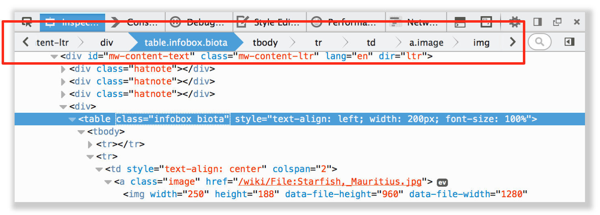
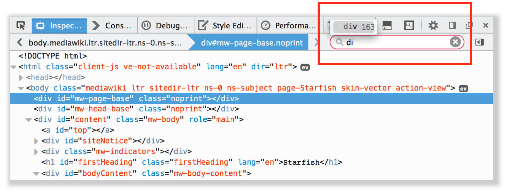
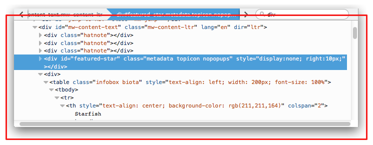
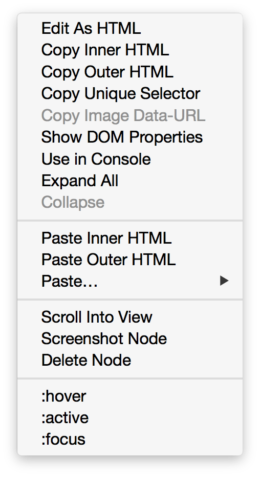
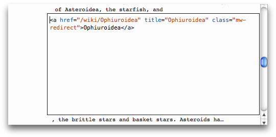

You can examine and edit the page's HTML in the HTML pane.
Navigating the HTML
At the top of the HTML pane there's a toolbar split into two sections: a trail of breadcrumbs and a search box.
HTML breadcrumbs
This shows the complete hierarchy through the document for the branch containing the selected element:
 If you click and hold on one of the elements in the bar, a popup menu appears that lets you select one of that element's siblings. Clicking the small arrow icons at the left and right ends of the bar will scroll the bar if it's wider than the available space.
From Firefox 34 onwards, hovering over a breadcrumb highlights that element in the page.
Searching
Click in the search box to expand it, then type the thing you are searching for. You'll see a popup showing matches.
Press "Enter". The first element of that type in the page will be selected, and pressing "Enter" again finds the next one.
You can search for a tag, or enter a CSS selector string, so you could search for an element with the ID myId by entering the string #myId.
From Firefox 40 onwards, you can search for class or id attributes without using the CSS selector, so just entering myId will find that element.
HTML tree
The rest of the pane shows you the page's HTML as a tree (this UI is also called the Markup View). Just to the left of each node is an arrow: click the arrow to expand the node. If you hold the Alt key while clicking the arrow, it expands the node and all the nodes underneath it.
Moving the mouse over a node in the tree highlights that element in the page.
Nodes that are hidden using display:none are shown faded (as are nodes that aren't rendered like <head> for example).
::before and ::after
From Firefox 35 onwards, you can inspect pseudo-elements added using ::before and ::after:
Element popup menu
You can perform certain common tasks on a specific node using a popup menu. To activate this menu, context-click the element:
The menu gives you the following options:
| Edit as HTML | Edit the element's HTML |
| Copy Inner HTML | Copy the inner HTML for the element |
| Copy Outer HTML |
Copy the outer HTML for the element From Firefox 42 onwards, pressing Ctrl + C (or Cmd + C on a Mac) also performs this action. |
| Copy Unique Selector | Copy a CSS selector that uniquely selects the element |
| Copy Image Data-URL | Copy image as a data:// URL, if the selected element is an image |
| Show DOM Properties | Open the split console and enter the console command "inspect($0)" to inspect the currently selected element. |
| Use in Console |
New in Firefox 43 temp0 (or temp1 if temp0 is already taken, and so on), then opens the split console, enabling you to interact with that node using the console's command line. |
| Paste Inner HTML | Paste the clipboard contents into the node as its innerHTML. |
| Paste Outer HTML | Paste the clipboard contents into the node as its outerHTML. |
| Paste/Before | Paste the clipboard contents into the document immediately before this node. |
| Paste/After | Paste the clipboard contents into the document immediately after this node. |
| Paste/As First Child | Paste the clipboard contents into the document as the first child of this node. |
| Paste/As Last Child | Paste the clipboard contents into the document as the last child of this node. |
| Scroll Into View |
New in Firefox 40 |
| Screenshot Node |
New in Firefox 41 |
| Delete Node | Delete the element |
| Open Link in New Tab |
New in Firefox 40 |
| Open File in Debugger |
New in Firefox 40 |
| Open File in Style-Editor |
New in Firefox 40 |
| Copy Link Address |
New in Firefox 40 |
| :hover | Set the :hover CSS pseudo-class |
| :active | Set the :active CSS pseudo-class |
| :focus | Set the :focus CSS pseudo-class |
Editing HTML
You can edit the HTML - tags, attributes, and content - directly in the HTML pane: double-click the text you want to edit, change it, and press Enter to see the changes reflected immediately.
To edit an element's outerHTML, activate the element's popup menu and select "Edit As HTML". You'll see a text box in the HTML pane:
You can add any HTML in here: changing the element's tag, changing existing elements, or adding new ones. Once you click outside the box, the changes are applied to the page.
Copy and paste
You can use the popup menu to copy nodes in the HTML tree and paste them into the desired location.
Drag and drop
New in Firefox 39.
From Firefox 39 onwards, you can edit HTML by moving nodes in the HTML tree. Just click and hold on any element and drag it up or down in the tree. When you release the mouse button, the element will be inserted at the corresponding position: